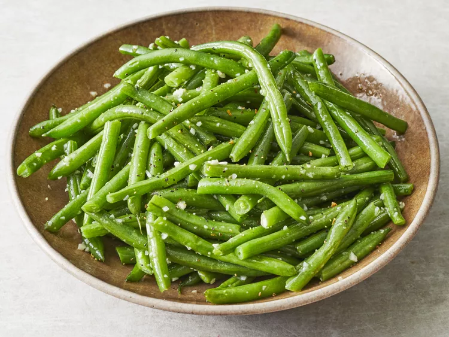

Lemon Garlic Green Beans

My wife loves these but I have never tried them!
Ingredients
- 1 lb green beans halved
- 4 cloves garlic minced
- 3 tbsp butter
- Salt and Pepper to taste
- Juice from half a lemon
Steps
- Snap off both ends of green beans and snap green beans in half.
- In a skillet, cover green beans with water and bring to a boil.
- While bringing to a boil, start to cut up and prepare garlic.
- Once boiling, reduce heat and simmer for 5 minutes.
- Drain water from the skillet, and add your butter.
- Cook over medium heat for about 5-10 minutes.
- Add in minced garlic, and a little bit of lemon juice.
- Cook for another 10 minutes, or until green beans are done to your liking.
- Once done, add salt and pepper and enjoy!
Return to home